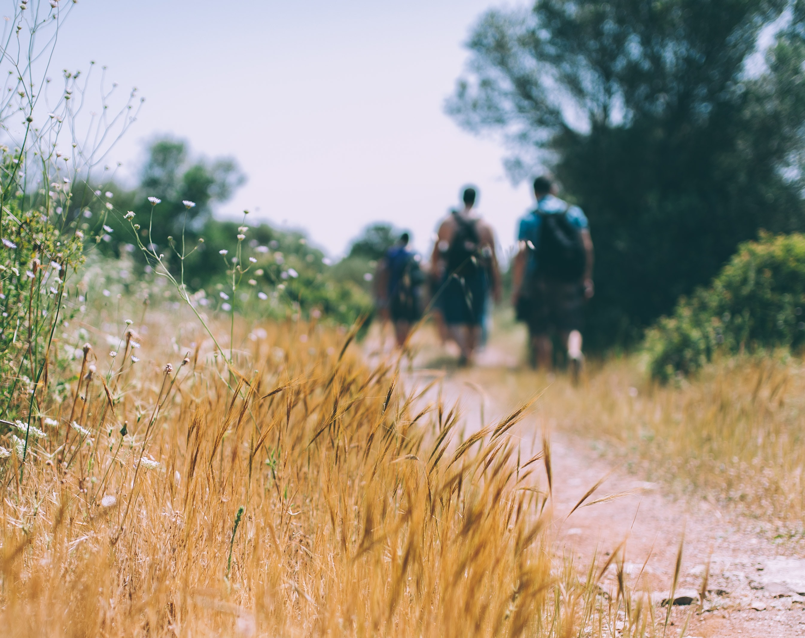
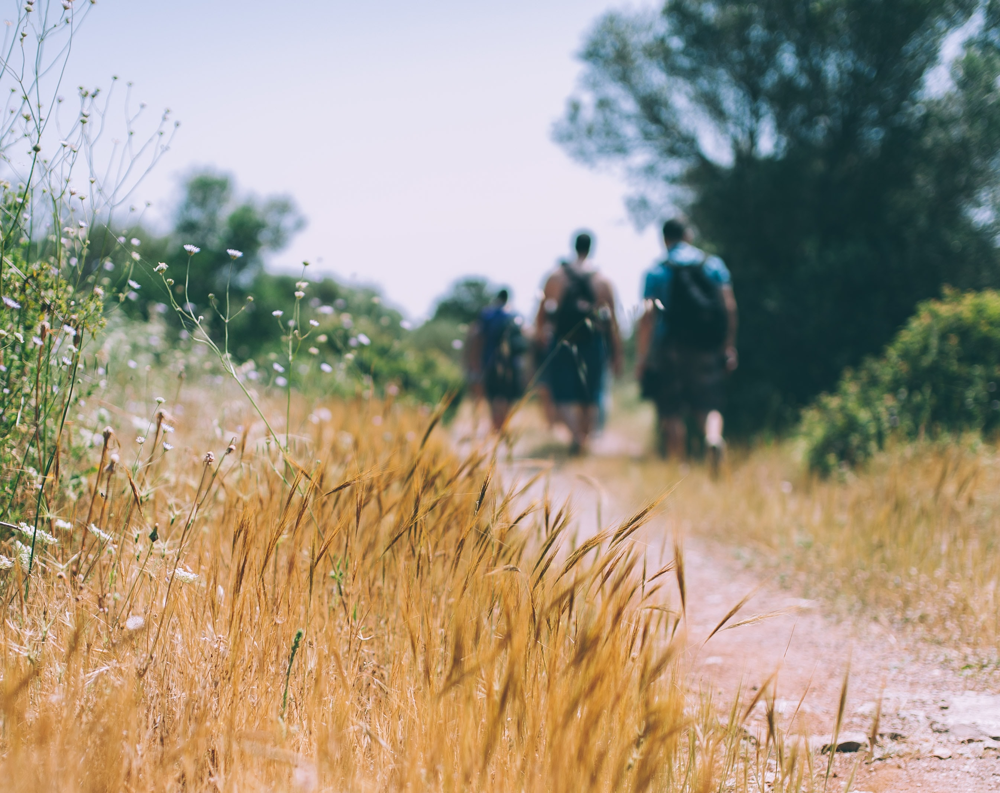
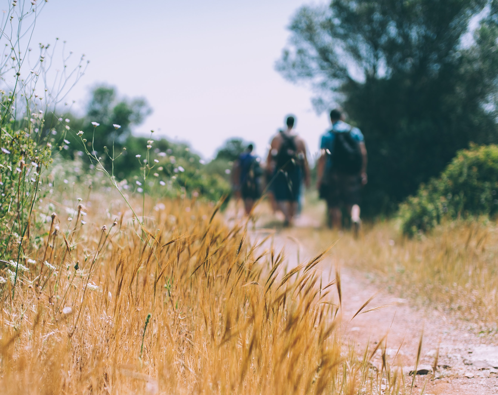

Come and join us on a walk or let us know the walks you have been on. You can take some pictures and send them to us, but we do encourage you to come along to a group walk and show us your pictures and tell us all we need to know about the route.
We host big group walks 3-4 times a year and we always do a really big one for charity once a year. Many of us undertake additional walks for charity, which you can learny more about by singing up to our newsletter and becoming a member.
